vignettes/Vig01b-introduction-to-alpsnmr-old-api.Rmd
Vig01b-introduction-to-alpsnmr-old-api.RmdAbstract
An introduction to the AlpsNMR package, showing the most relevant functions and a proposed workflow, using the older workflow.
The AlpsNMR package was written with two purposes in
mind:
Functions from this package written for data analysts and NMR
scientists are prefixed with nmr_, while higher level
functions written for IT pipeline builders are prefixed with
pipe_. The main reason why all exported functions have a
prefix is to make it easy for the user to discover the functions from
the package. By typing nmr_ RStudio will return the list of exported
functions. In the R terminal, nmr_ followed by the tab key (⇥) twice
will have the same effect. Other popular packages, follow similar
approaches (e.g: forcats: fct_*,
stringr: str_*).
This vignette is written for the first group. It assumes some prior basic knowledge of NMR and data analysis, as well as some basic R programming. In case you are interested in building pipelines with this package, you may want to open the file saved in this directory (run it on your computer):
pipeline_example <- system.file("pipeline-rmd", "pipeline_example.R", package = "AlpsNMR")
pipeline_example
library(BiocParallel)
library(AlpsNMR)
#> Loading required package: future
#>
#> Attaching package: 'AlpsNMR'
#> The following object is masked from 'package:stats':
#>
#> filter
library(ggplot2)This package is able to parallellize several functions through the
use of the BiocParallel package. Whether to parallelize or
not is left to the user that can control the parallellization
registering backends. Please check the BiocParallel
introduction for further details
library(BiocParallel)
#register(SerialParam(), default = TRUE) # disable parallellization
register(SnowParam(workers = 3, exportglobals = FALSE), default = TRUE) # enable parallellization with 4 workersMeOH_plasma_extraction dataset
To explore the basics of the AlpsNMR package, we have included four NMR samples acquired in a 600 MHz Bruker instrument bundled with the package. The samples are pooled quality control plasma samples, that were extracted with methanol, and therefore only contain small molecules.
If you have installed this package, you can obtain the directory where the four samples are with the command
MeOH_plasma_extraction_dir <- system.file("dataset-demo", package = "AlpsNMR")
MeOH_plasma_extraction_dir
#> [1] "/__w/_temp/Library/AlpsNMR/dataset-demo"The demo directory includes four samples (zipped) and a dummy Excel metadata file.
fs::dir_ls(MeOH_plasma_extraction_dir)
#> /__w/_temp/Library/AlpsNMR/dataset-demo/10.zip
#> /__w/_temp/Library/AlpsNMR/dataset-demo/20.zip
#> /__w/_temp/Library/AlpsNMR/dataset-demo/30.zip
#> /__w/_temp/Library/AlpsNMR/dataset-demo/README.txt
#> /__w/_temp/Library/AlpsNMR/dataset-demo/dummy_metadata.xlsxGiven the name of the dataset, one may guess that the dataset was used to check the Methanol extraction in serum samples. The dummy metadata consists of dummy information, just for the sake of showing how this package can integrate external metadata. The excel file consists of two tidy tables, in two sheets.
MeOH_plasma_extraction_xlsx <- file.path(MeOH_plasma_extraction_dir, "dummy_metadata.xlsx")
exp_subj_id <- readxl::read_excel(MeOH_plasma_extraction_xlsx, sheet = 1)
subj_id_age <- readxl::read_excel(MeOH_plasma_extraction_xlsx, sheet = 2)
exp_subj_id
#> # A tibble: 3 × 3
#> NMRExperiment SubjectID TimePoint
#> <chr> <chr> <chr>
#> 1 10 Ana baseline
#> 2 20 Ana 3 months
#> 3 30 Elia baseline
subj_id_age
#> # A tibble: 2 × 2
#> SubjectID Age
#> <chr> <dbl>
#> 1 Ana 29
#> 2 Elia 0The function to read samples is called nmr_read_samples.
It expects a character vector with the samples to load that can be paths
to directories of Bruker format samples or paths to JDX files.
Additionally, this function can filter by pulse sequences (e.g. load only NOESY samples) or loading only metadata.
zip_files <- fs::dir_ls(MeOH_plasma_extraction_dir, glob = "*.zip")
zip_files
#> /__w/_temp/Library/AlpsNMR/dataset-demo/10.zip
#> /__w/_temp/Library/AlpsNMR/dataset-demo/20.zip
#> /__w/_temp/Library/AlpsNMR/dataset-demo/30.zip
dataset <- nmr_read_samples(sample_names = zip_files)
dataset
#> An nmr_dataset (3 samples)As we have not added any metadata to this dataset, the only column we
see is the NMRExperiment:
nmr_meta_get(dataset, groups = "external")
#> # A tibble: 3 × 1
#> NMRExperiment
#> <chr>
#> 1 10
#> 2 20
#> 3 30Initally our dataset only has the NMRExperiment
column:
nmr_meta_get(dataset, groups = "external")
#> # A tibble: 3 × 1
#> NMRExperiment
#> <chr>
#> 1 10
#> 2 20
#> 3 30The exp_subj_id table we loaded links the
NMRExperiment to the SubjectID.
As we already have the NMRExperiment column, we can use
it as the merging column (note that both columns have the same column
name to match the metadata such as group class, age, BMI…):
dataset <- nmr_meta_add(dataset, metadata = exp_subj_id, by = "NMRExperiment")
nmr_meta_get(dataset, groups = "external")
#> # A tibble: 3 × 3
#> NMRExperiment SubjectID TimePoint
#> <chr> <chr> <chr>
#> 1 10 Ana baseline
#> 2 20 Ana 3 months
#> 3 30 Elia baselineIf we have info from different files we can match them. For instance,
now we have the SubjectID information so we can add the
table that adds the SubjectID to the Age.
dataset <- nmr_meta_add(dataset, metadata = subj_id_age, by = "SubjectID")
nmr_meta_get(dataset, groups = "external")
#> # A tibble: 3 × 4
#> NMRExperiment SubjectID TimePoint Age
#> <chr> <chr> <chr> <dbl>
#> 1 10 Ana baseline 29
#> 2 20 Ana 3 months 29
#> 3 30 Elia baseline 0Now we have our metadata integrated in the dataset and we can make use of it in further data analysis steps.
1D NMR samples can be interpolated together, in order to arrange all the spectra into a matrix, with one row per sample. The main parameters we would need is the range of ppm values that we want to interpolate and the resolution.
We can see the ppm resolution by looking at the ppm axis of one sample:
ppm_res <- nmr_ppm_resolution(dataset)[[1]]
message("The ppm resolution is: ", format(ppm_res, digits = 2), " ppm")
#> The ppm resolution is: 0.00023 ppmWe can interpolate the dataset, obtaining an
nmr_dataset_1D object:
dataset <- nmr_interpolate_1D(dataset, axis = c(min = -0.5, max = 10, by = 2.3E-4))This operation changes the class of the object, as now the data is on
a matrix. The dataset is now of class nmr_dataset_1D. The
axis element is now a numeric vector and the
data_1r element is a matrix.
The AlpsNMR package offers the possibility to plot
nmr_dataset_1D objects. Plotting many spectra with so many
points is quite expensive so it is possible to include only some regions
of the spectra or plot only some samples.
Use ?plot.nmr_dataset_1D to check the parameters, among
them:
NMRExperiment: A character vector with the NMR
experiments to plotchemshift_range: A ppm range to plot only a small
region, or to reduce the resolutioninteractive: To make the plot interactive -
...: Can be used to pass additional parameters such as
color = "SubjectID" that are passed as aesthetics to
ggplot.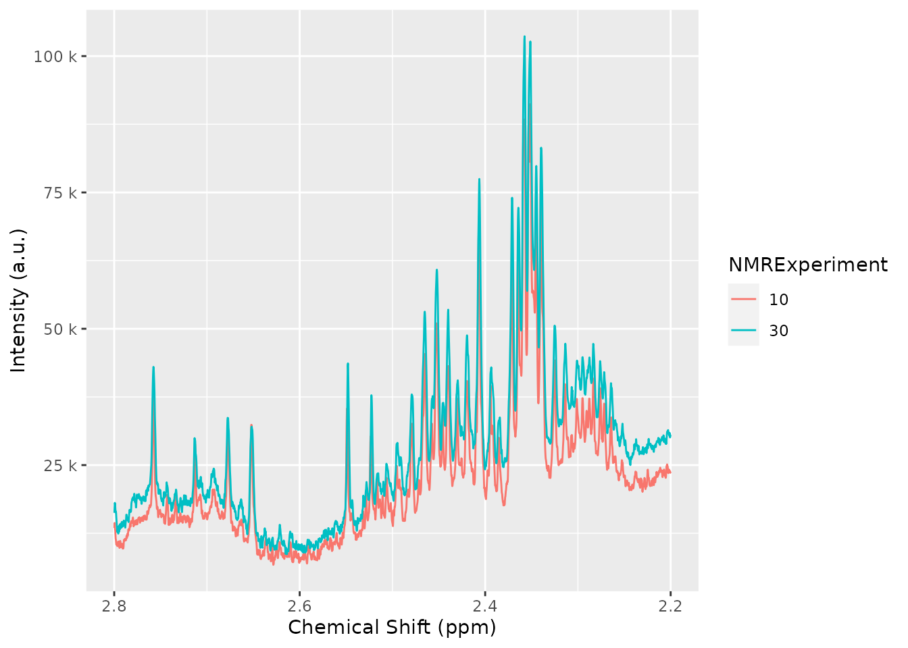
The option interactive = TRUE described above has some
performance limitations. As high performance workaround, you can make
many plots interactive with the function
plot_interactive.
This function will use WebGL technologies to create a webpage that, once opened, allows you to interact with the plot.
Due to technical limitations, these plots need to be opened manually and can’t be embedded in RMarkdown documents. Therefore, the function saves the plot in the directory for further exploration. Additionally, some old web browsers may not be able to display these interactive plots correctly.
plt <- plot(dataset, NMRExperiment = c("10", "30"), chemshift_range = c(2.2, 2.8))
plot_interactive(plt, "plot_region.html")Some regions can easily be excluded from the spectra with
nmr_exclude_region. Note that the regions are fully removed
and not zeroed, as using zeros complicates a lot the implementation1 and has
little advantages.
regions_to_exclude <- list(water = c(4.6, 5), methanol = c(3.33, 3.39))
dataset <- nmr_exclude_region(dataset, exclude = regions_to_exclude)
plot(dataset, chemshift_range = c(4.2, 5.5))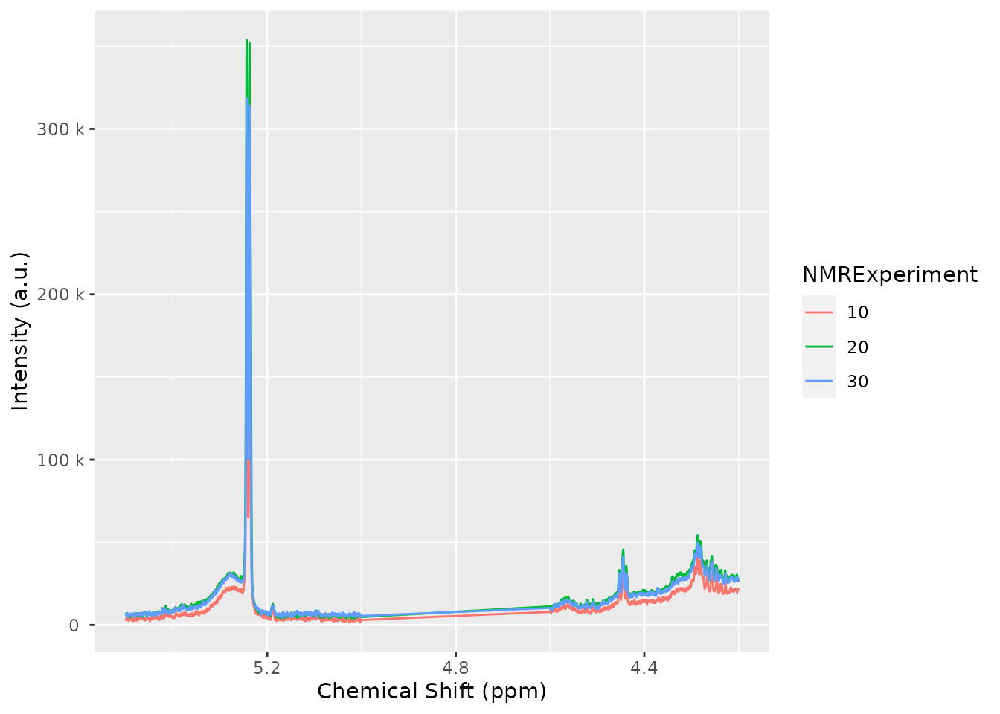
Maybe we just want to analyze a subset of the data, e.g., only a class group or a particular gender. We can filter some samples according to their metadata as follows:
samples_10_20 <- filter(dataset, SubjectID == "Ana")
nmr_meta_get(samples_10_20, groups = "external")
#> # A tibble: 2 × 4
#> NMRExperiment SubjectID TimePoint Age
#> <chr> <chr> <chr> <dbl>
#> 1 10 Ana baseline 29
#> 2 20 Ana 3 months 29The AlpsNMR package includes robust PCA analysis for outlier
detection. With such a small demo dataset, it is not practical to use,
but check out the documentation of nmr_pca_outliers_*
functions.
pca_outliers_rob <- nmr_pca_outliers_robust(dataset, ncomp = 3)
nmr_pca_outliers_plot(dataset, pca_outliers_rob)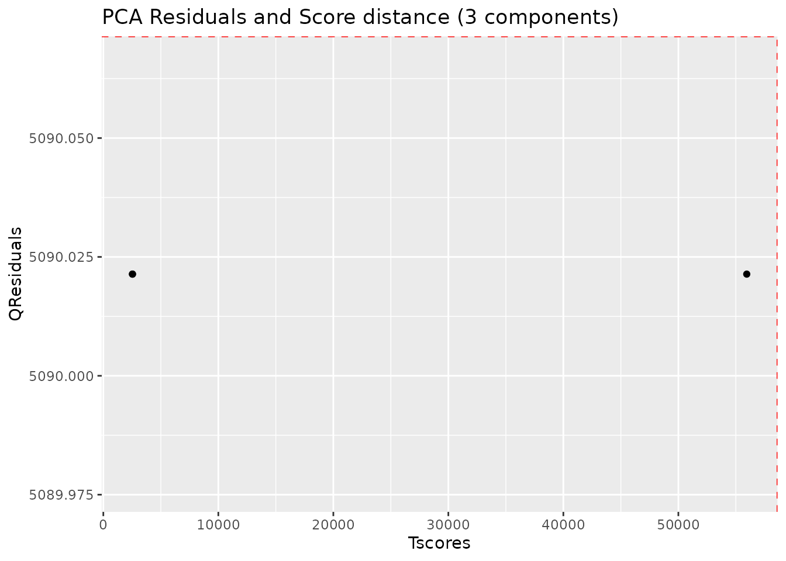
Spectra may display an unstable baseline, specially when processing
blood/fecal blood/fecal samples. If so,
nmr_baseline_removal subtract the baseline by means of
Asymmetric Least Squares method.
See before:
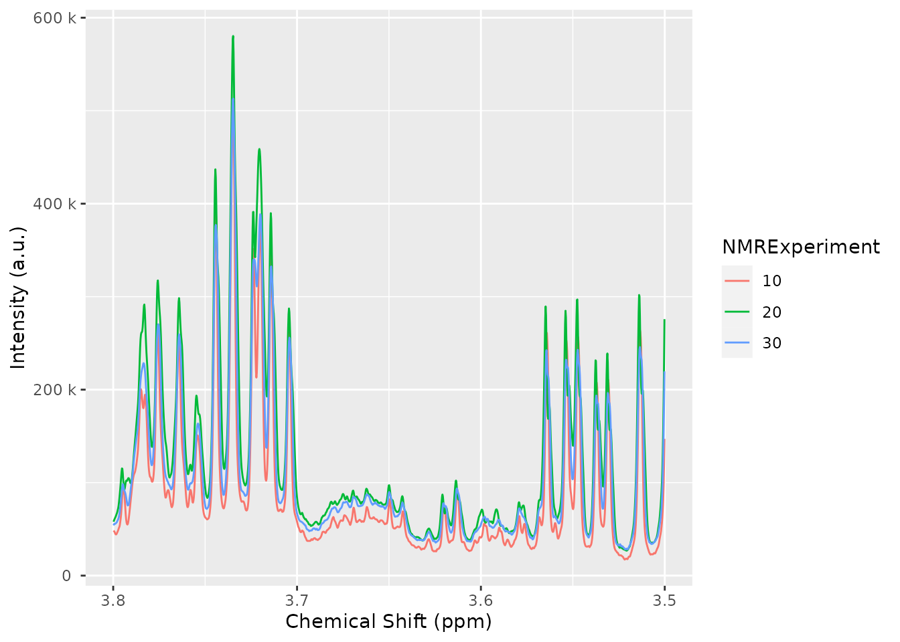
And after:
dataset = nmr_baseline_removal(dataset, lambda = 6, p = 0.01)
plot(dataset, chemshift_range = c(3.5,3.8))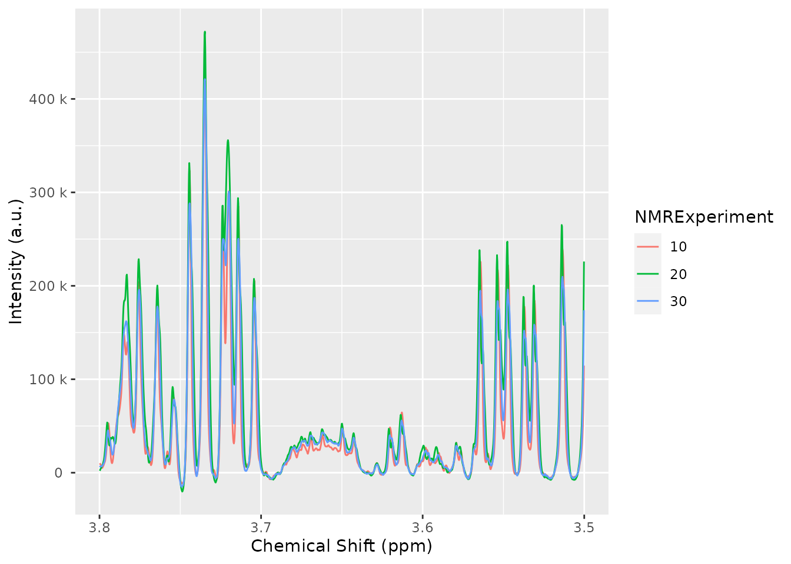
The peak detection is performed on short spectra segments using a
continuous wavelet transform. See ?nmr_detect_peaks for
more information.
Our current approach relies on the use of the baseline threshold
(baselineThresh) automatic calculated (see
?nmr_baseline_threshold) and the Signal to Noise Threshold
(SNR.Th) to discriminate valid peaks from noise.
The combination of the baselineThresh and the
SNR.Th optimizes the number of actual peaks from noise.
The advantage of the SNR.Th method is that it estimates
the noise level on each spectra region independently, so in practice it
can be used as a dynamic baseline threshold level.
peak_table <- nmr_detect_peaks(dataset,
nDivRange_ppm = 0.1,
scales = seq(1, 16, 2),
baselineThresh = NULL, SNR.Th = 3)
NMRExp_ref <- nmr_align_find_ref(dataset, peak_table)
message("Your reference is NMRExperiment ", NMRExp_ref)
#> Your reference is NMRExperiment 30
nmr_detect_peaks_plot(dataset, peak_table, NMRExperiment = "20", chemshift_range = c(3.5,3.8))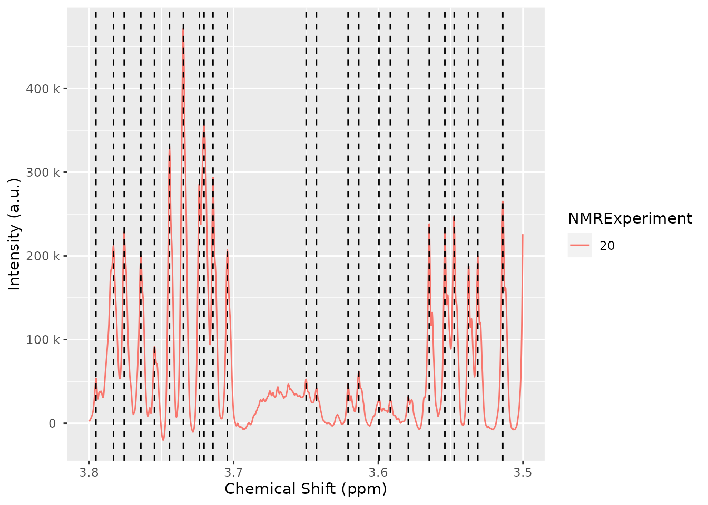
To align the sample, we use the nmr_align function,
which in turn uses a hierarchical clustering method (see
?nmr_align for further details).
The maxShift_ppm limits the maximum shift allowed for
the spectra.
nmr_exp_ref <- nmr_align_find_ref(dataset, peak_table)
dataset_align <- nmr_align(dataset, peak_table, nmr_exp_ref, maxShift_ppm = 0.0015, acceptLostPeak = FALSE)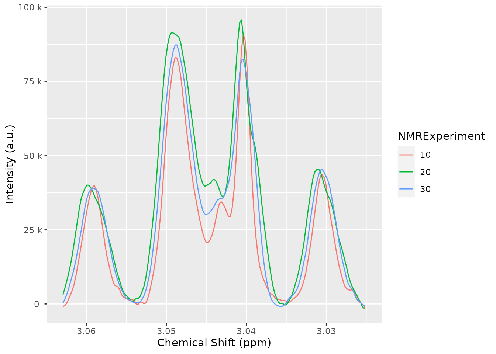
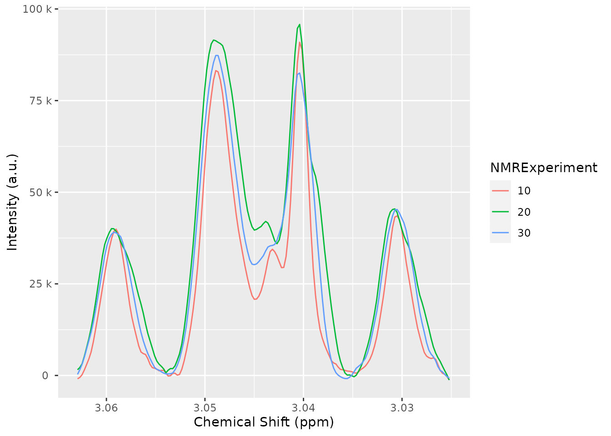
There are multiple normalization techniques available. The most
strongly recommended is the pqn normalization, but it may
not be fully reliable when the number of samples is small, as it needs a
computation of the median spectra. Nevertheless, it is possible to
compute it:
dataset_norm <- nmr_normalize(dataset_align, method = "pqn")
#> Warning: There are not enough samples for reliably estimating the median spectra
#> ℹ The Probabalistic Quotient Normalization requires several samples to compute the median spectra. Your number of samples is low
#> ℹ Review your peaks before and after normalization to ensure there are no big distortionsThe AlpsNMR package offers the possibility to extract
additional normalization information with
nmr_normalize_extra_info(dataset), to explore the
normalization factors applied to each sample:
The plot shows the dispersion with respect to the median of the normalization factors, and can highlight samples with abnormaly large or small normalization factors.
diagnostic <- nmr_normalize_extra_info(dataset_norm)
diagnostic$norm_factor
#> NMRExperiment norm_factor norm_factor_norm
#> 1 10 0.8706322 0.8706322
#> 2 20 1.1523450 1.1523450
#> 3 30 1.0000000 1.0000000
diagnostic$plot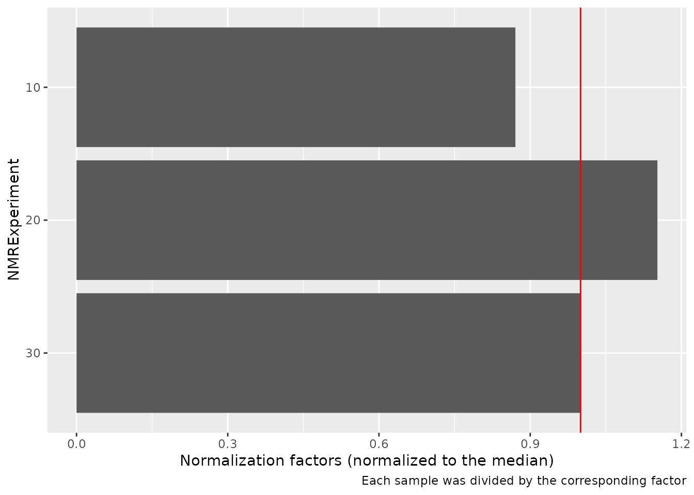
If we want to integrate the whole spectra, we need ppm from the
peak_table. See Peak detection section. The
function nmr_integrate_peak_positions generates a new
nmr_dataset_1D object containing the integrals from the
peak_table (ppm values corresponding to detected
peaks).
peak_table_integration = nmr_integrate_peak_positions(
samples = dataset_norm,
peak_pos_ppm = peak_table$ppm,
peak_width_ppm = 0.006)
#> New names:
#> • `ppm_-0.0002` -> `ppm_-0.0002...6`
#> • `ppm_0.8607` -> `ppm_0.8607...22`
#> • `ppm_0.8655` -> `ppm_0.8655...23`
#> • `ppm_0.8729` -> `ppm_0.8729...24`
#> • `ppm_0.8784` -> `ppm_0.8784...25`
#> • `ppm_0.8910` -> `ppm_0.8910...26`
#> • `ppm_0.9032` -> `ppm_0.9032...27`
#> • `ppm_0.9085` -> `ppm_0.9085...28`
#> • `ppm_0.9196` -> `ppm_0.9196...30`
#> • `ppm_0.9313` -> `ppm_0.9313...31`
#> • `ppm_0.9437` -> `ppm_0.9437...32`
#> • `ppm_0.9554` -> `ppm_0.9554...33`
#> • `ppm_0.9658` -> `ppm_0.9658...34`
#> • `ppm_0.9902` -> `ppm_0.9902...36`
#> • `ppm_1.0019` -> `ppm_1.0019...37`
#> • `ppm_1.0093` -> `ppm_1.0093...38`
#> • `ppm_1.0208` -> `ppm_1.0208...39`
#> • `ppm_1.0410` -> `ppm_1.0410...40`
#> • `ppm_1.0716` -> `ppm_1.0716...43`
#> • `ppm_1.0803` -> `ppm_1.0803...44`
#> • `ppm_1.1505` -> `ppm_1.1505...46`
#> • `ppm_1.1979` -> `ppm_1.1979...47`
#> • `ppm_1.2084` -> `ppm_1.2084...48`
#> • `ppm_1.2179` -> `ppm_1.2179...49`
#> • `ppm_1.3262` -> `ppm_1.3262...54`
#> • `ppm_1.3377` -> `ppm_1.3377...55`
#> • `ppm_1.4424` -> `ppm_1.4424...57`
#> • `ppm_1.4913` -> `ppm_1.4913...59`
#> • `ppm_1.5693` -> `ppm_1.5693...66`
#> • `ppm_1.6195` -> `ppm_1.6195...72`
#> • `ppm_1.6443` -> `ppm_1.6443...75`
#> • `ppm_1.6562` -> `ppm_1.6562...77`
#> • `ppm_1.6799` -> `ppm_1.6799...80`
#> • `ppm_1.6990` -> `ppm_1.6990...86`
#> • `ppm_1.7351` -> `ppm_1.7351...92`
#> • `ppm_1.7614` -> `ppm_1.7614...95`
#> • `ppm_1.8131` -> `ppm_1.8131...97`
#> • `ppm_1.8748` -> `ppm_1.8748...103`
#> • `ppm_1.9210` -> `ppm_1.9210...106`
#> • `ppm_1.9313` -> `ppm_1.9313...107`
#> • `ppm_2.0026` -> `ppm_2.0026...114`
#> • `ppm_2.0194` -> `ppm_2.0194...117`
#> • `ppm_2.0307` -> `ppm_2.0307...118`
#> • `ppm_2.0422` -> `ppm_2.0422...119`
#> • `ppm_2.0806` -> `ppm_2.0806...123`
#> • `ppm_2.1149` -> `ppm_2.1149...126`
#> • `ppm_2.1192` -> `ppm_2.1192...127`
#> • `ppm_2.1273` -> `ppm_2.1273...128`
#> • `ppm_2.1324` -> `ppm_2.1324...129`
#> • `ppm_2.1572` -> `ppm_2.1572...134`
#> • `ppm_2.1655` -> `ppm_2.1655...135`
#> • `ppm_2.2835` -> `ppm_2.2835...143`
#> • `ppm_2.2950` -> `ppm_2.2950...144`
#> • `ppm_2.3251` -> `ppm_2.3251...147`
#> • `ppm_2.3451` -> `ppm_2.3451...149`
#> • `ppm_2.3513` -> `ppm_2.3513...150`
#> • `ppm_2.3575` -> `ppm_2.3575...151`
#> • `ppm_2.3644` -> `ppm_2.3644...152`
#> • `ppm_2.3711` -> `ppm_2.3711...153`
#> • `ppm_2.4196` -> `ppm_2.4196...157`
#> • `ppm_2.4912` -> `ppm_2.4912...166`
#> • `ppm_2.4953` -> `ppm_2.4953...167`
#> • `ppm_2.5284` -> `ppm_2.5284...171`
#> • `ppm_2.6216` -> `ppm_2.6216...177`
#> • `ppm_2.7577` -> `ppm_2.7577...188`
#> • `ppm_2.9332` -> `ppm_2.9332...199`
#> • `ppm_3.0305` -> `ppm_3.0305...206`
#> • `ppm_3.0404` -> `ppm_3.0404...207`
#> • `ppm_3.0489` -> `ppm_3.0489...208`
#> • `ppm_3.2081` -> `ppm_3.2081...218`
#> • `ppm_3.2154` -> `ppm_3.2154...219`
#> • `ppm_3.2320` -> `ppm_3.2320...220`
#> • `ppm_3.2382` -> `ppm_3.2382...221`
#> • `ppm_3.2672` -> `ppm_3.2672...223`
#> • `ppm_3.2706` -> `ppm_3.2706...224`
#> • `ppm_3.4031` -> `ppm_3.4031...228`
#> • `ppm_3.4243` -> `ppm_3.4243...231`
#> • `ppm_3.4829` -> `ppm_3.4829...238`
#> • `ppm_3.4981` -> `ppm_3.4981...240`
#> • `ppm_3.5135` -> `ppm_3.5135...241`
#> • `ppm_3.5372` -> `ppm_3.5372...243`
#> • `ppm_3.7042` -> `ppm_3.7042...254`
#> • `ppm_3.7141` -> `ppm_3.7141...255`
#> • `ppm_3.7200` -> `ppm_3.7200...256`
#> • `ppm_3.7237` -> `ppm_3.7237...257`
#> • `ppm_3.7348` -> `ppm_3.7348...258`
#> • `ppm_3.7442` -> `ppm_3.7442...259`
#> • `ppm_3.7757` -> `ppm_3.7757...262`
#> • `ppm_3.8233` -> `ppm_3.8233...265`
#> • `ppm_3.8438` -> `ppm_3.8438...268`
#> • `ppm_3.8528` -> `ppm_3.8528...270`
#> • `ppm_3.8886` -> `ppm_3.8886...273`
#> • `ppm_3.8923` -> `ppm_3.8923...274`
#> • `ppm_3.9091` -> `ppm_3.9091...275`
#> • `ppm_3.9128` -> `ppm_3.9128...276`
#> • `ppm_3.9333` -> `ppm_3.9333...277`
#> • `ppm_3.9493` -> `ppm_3.9493...278`
#> • `ppm_3.9917` -> `ppm_3.9917...282`
#> • `ppm_4.0020` -> `ppm_4.0020...283`
#> • `ppm_4.0108` -> `ppm_4.0108...284`
#> • `ppm_4.1205` -> `ppm_4.1205...288`
#> • `ppm_4.1320` -> `ppm_4.1320...289`
#> • `ppm_4.1927` -> `ppm_4.1927...291`
#> • `ppm_4.2281` -> `ppm_4.2281...293`
#> • `ppm_4.2398` -> `ppm_4.2398...295`
#> • `ppm_4.2566` -> `ppm_4.2566...299`
#> • `ppm_4.4376` -> `ppm_4.4376...315`
#> • `ppm_4.4531` -> `ppm_4.4531...317`
#> • `ppm_4.5218` -> `ppm_4.5218...320`
#> • `ppm_4.5221` -> `ppm_4.5221...321`
#> • `ppm_4.5906` -> `ppm_4.5906...324`
#> • `ppm_4.5991` -> `ppm_4.5991...325`
#> • `ppm_5.2369` -> `ppm_5.2369...329`
#> • `ppm_5.4154` -> `ppm_5.4154...336`
#> • `ppm_6.1026` -> `ppm_6.1026...350`
#> • `ppm_6.9009` -> `ppm_6.9009...361`
#> • `ppm_6.9154` -> `ppm_6.9154...362`
#> • `ppm_7.2894` -> `ppm_7.2894...372`
#> • `ppm_7.3014` -> `ppm_7.3014...373`
#> • `ppm_7.3409` -> `ppm_7.3409...376`
#> • `ppm_7.3816` -> `ppm_7.3816...380`
#> • `ppm_7.4881` -> `ppm_7.4881...387`
#> • `ppm_7.5553` -> `ppm_7.5553...390`
#> • `ppm_8.2458` -> `ppm_8.2458...407`
#> • `ppm_8.3515` -> `ppm_8.3515...409`
#> • `ppm_8.4608` -> `ppm_8.4608...411`
#> • `ppm_-0.0002` -> `ppm_-0.0002...422`
#> • `ppm_0.8110` -> `ppm_0.8110...438`
#> • `ppm_0.8552` -> `ppm_0.8552...442`
#> • `ppm_0.8607` -> `ppm_0.8607...443`
#> • `ppm_0.8784` -> `ppm_0.8784...446`
#> • `ppm_0.8910` -> `ppm_0.8910...447`
#> • `ppm_0.9085` -> `ppm_0.9085...449`
#> • `ppm_0.9196` -> `ppm_0.9196...450`
#> • `ppm_0.9313` -> `ppm_0.9313...451`
#> • `ppm_0.9437` -> `ppm_0.9437...452`
#> • `ppm_0.9554` -> `ppm_0.9554...453`
#> • `ppm_0.9658` -> `ppm_0.9658...454`
#> • `ppm_1.0093` -> `ppm_1.0093...458`
#> • `ppm_1.0205` -> `ppm_1.0205...459`
#> • `ppm_1.0716` -> `ppm_1.0716...463`
#> • `ppm_1.0803` -> `ppm_1.0803...464`
#> • `ppm_1.1505` -> `ppm_1.1505...468`
#> • `ppm_1.2084` -> `ppm_1.2084...470`
#> • `ppm_1.2179` -> `ppm_1.2179...471`
#> • `ppm_1.2294` -> `ppm_1.2294...472`
#> • `ppm_1.3262` -> `ppm_1.3262...476`
#> • `ppm_1.3377` -> `ppm_1.3377...477`
#> • `ppm_1.4308` -> `ppm_1.4308...478`
#> • `ppm_1.4424` -> `ppm_1.4424...479`
#> • `ppm_1.4794` -> `ppm_1.4794...480`
#> • `ppm_1.5693` -> `ppm_1.5693...487`
#> • `ppm_1.6195` -> `ppm_1.6195...491`
#> • `ppm_1.6319` -> `ppm_1.6319...492`
#> • `ppm_1.6441` -> `ppm_1.6441...494`
#> • `ppm_1.6560` -> `ppm_1.6560...495`
#> • `ppm_1.6562` -> `ppm_1.6562...496`
#> • `ppm_1.6675` -> `ppm_1.6675...498`
#> • `ppm_1.6747` -> `ppm_1.6747...499`
#> • `ppm_1.6799` -> `ppm_1.6799...501`
#> • `ppm_1.6990` -> `ppm_1.6990...503`
#> • `ppm_1.7075` -> `ppm_1.7075...504`
#> • `ppm_1.7614` -> `ppm_1.7614...511`
#> • `ppm_1.8752` -> `ppm_1.8752...522`
#> • `ppm_1.9812` -> `ppm_1.9812...530`
#> • `ppm_2.0422` -> `ppm_2.0422...537`
#> • `ppm_2.0923` -> `ppm_2.0923...542`
#> • `ppm_2.1192` -> `ppm_2.1192...545`
#> • `ppm_2.1273` -> `ppm_2.1273...546`
#> • `ppm_2.1324` -> `ppm_2.1324...547`
#> • `ppm_2.1572` -> `ppm_2.1572...550`
#> • `ppm_2.1655` -> `ppm_2.1655...551`
#> • `ppm_2.2515` -> `ppm_2.2515...558`
#> • `ppm_2.2717` -> `ppm_2.2717...561`
#> • `ppm_2.3451` -> `ppm_2.3451...570`
#> • `ppm_2.3513` -> `ppm_2.3513...571`
#> • `ppm_2.3575` -> `ppm_2.3575...572`
#> • `ppm_2.3644` -> `ppm_2.3644...573`
#> • `ppm_2.4063` -> `ppm_2.4063...577`
#> • `ppm_2.4196` -> `ppm_2.4196...578`
#> • `ppm_2.4456` -> `ppm_2.4456...581`
#> • `ppm_2.4953` -> `ppm_2.4953...586`
#> • `ppm_2.5284` -> `ppm_2.5284...590`
#> • `ppm_2.7994` -> `ppm_2.7994...606`
#> • `ppm_2.9339` -> `ppm_2.9339...615`
#> • `ppm_3.2154` -> `ppm_3.2154...638`
#> • `ppm_3.2706` -> `ppm_3.2706...643`
#> • `ppm_3.3930` -> `ppm_3.3930...646`
#> • `ppm_3.4185` -> `ppm_3.4185...648`
#> • `ppm_3.5793` -> `ppm_3.5793...663`
#> • `ppm_3.6428` -> `ppm_3.6428...668`
#> • `ppm_3.6499` -> `ppm_3.6499...669`
#> • `ppm_3.7237` -> `ppm_3.7237...673`
#> • `ppm_3.7348` -> `ppm_3.7348...674`
#> • `ppm_3.7642` -> `ppm_3.7642...677`
#> • `ppm_3.7757` -> `ppm_3.7757...678`
#> • `ppm_3.8438` -> `ppm_3.8438...683`
#> • `ppm_3.8923` -> `ppm_3.8923...689`
#> • `ppm_3.9128` -> `ppm_3.9128...691`
#> • `ppm_3.9917` -> `ppm_3.9917...698`
#> • `ppm_4.0020` -> `ppm_4.0020...699`
#> • `ppm_4.2281` -> `ppm_4.2281...712`
#> • `ppm_4.2398` -> `ppm_4.2398...714`
#> • `ppm_4.2566` -> `ppm_4.2566...717`
#> • `ppm_4.5089` -> `ppm_4.5089...735`
#> • `ppm_4.5092` -> `ppm_4.5092...736`
#> • `ppm_4.5221` -> `ppm_4.5221...737`
#> • `ppm_4.5991` -> `ppm_4.5991...742`
#> • `ppm_5.0973` -> `ppm_5.0973...744`
#> • `ppm_5.4154` -> `ppm_5.4154...753`
#> • `ppm_5.4220` -> `ppm_5.4220...754`
#> • `ppm_6.1026` -> `ppm_6.1026...771`
#> • `ppm_6.9154` -> `ppm_6.9154...790`
#> • `ppm_6.9626` -> `ppm_6.9626...791`
#> • `ppm_7.2066` -> `ppm_7.2066...798`
#> • `ppm_7.3014` -> `ppm_7.3014...803`
#> • `ppm_7.3409` -> `ppm_7.3409...806`
#> • `ppm_7.4881` -> `ppm_7.4881...816`
#> • `ppm_7.5415` -> `ppm_7.5415...819`
#> • `ppm_8.2458` -> `ppm_8.2458...839`
#> • `ppm_8.4608` -> `ppm_8.4608...842`
#> • `ppm_-0.0002` -> `ppm_-0.0002...853`
#> • `ppm_0.8110` -> `ppm_0.8110...865`
#> • `ppm_0.8552` -> `ppm_0.8552...869`
#> • `ppm_0.8655` -> `ppm_0.8655...871`
#> • `ppm_0.8729` -> `ppm_0.8729...872`
#> • `ppm_0.9032` -> `ppm_0.9032...875`
#> • `ppm_0.9085` -> `ppm_0.9085...876`
#> • `ppm_0.9196` -> `ppm_0.9196...877`
#> • `ppm_0.9313` -> `ppm_0.9313...878`
#> • `ppm_0.9902` -> `ppm_0.9902...883`
#> • `ppm_1.0019` -> `ppm_1.0019...884`
#> • `ppm_1.0205` -> `ppm_1.0205...886`
#> • `ppm_1.0208` -> `ppm_1.0208...887`
#> • `ppm_1.0410` -> `ppm_1.0410...888`
#> • `ppm_1.0716` -> `ppm_1.0716...891`
#> • `ppm_1.0803` -> `ppm_1.0803...892`
#> • `ppm_1.1505` -> `ppm_1.1505...896`
#> • `ppm_1.1979` -> `ppm_1.1979...897`
#> • `ppm_1.2084` -> `ppm_1.2084...898`
#> • `ppm_1.2179` -> `ppm_1.2179...899`
#> • `ppm_1.2294` -> `ppm_1.2294...900`
#> • `ppm_1.3262` -> `ppm_1.3262...904`
#> • `ppm_1.3377` -> `ppm_1.3377...905`
#> • `ppm_1.4308` -> `ppm_1.4308...906`
#> • `ppm_1.4424` -> `ppm_1.4424...907`
#> • `ppm_1.4794` -> `ppm_1.4794...908`
#> • `ppm_1.4913` -> `ppm_1.4913...909`
#> • `ppm_1.6319` -> `ppm_1.6319...919`
#> • `ppm_1.6441` -> `ppm_1.6441...920`
#> • `ppm_1.6443` -> `ppm_1.6443...921`
#> • `ppm_1.6560` -> `ppm_1.6560...922`
#> • `ppm_1.6562` -> `ppm_1.6562...923`
#> • `ppm_1.6675` -> `ppm_1.6675...924`
#> • `ppm_1.6747` -> `ppm_1.6747...925`
#> • `ppm_1.6799` -> `ppm_1.6799...927`
#> • `ppm_1.6990` -> `ppm_1.6990...930`
#> • `ppm_1.7075` -> `ppm_1.7075...933`
#> • `ppm_1.7351` -> `ppm_1.7351...937`
#> • `ppm_1.7614` -> `ppm_1.7614...940`
#> • `ppm_1.8131` -> `ppm_1.8131...945`
#> • `ppm_1.8748` -> `ppm_1.8748...952`
#> • `ppm_1.8752` -> `ppm_1.8752...953`
#> • `ppm_1.9210` -> `ppm_1.9210...956`
#> • `ppm_1.9313` -> `ppm_1.9313...957`
#> • `ppm_1.9812` -> `ppm_1.9812...962`
#> • `ppm_2.0026` -> `ppm_2.0026...964`
#> • `ppm_2.0194` -> `ppm_2.0194...967`
#> • `ppm_2.0307` -> `ppm_2.0307...968`
#> • `ppm_2.0806` -> `ppm_2.0806...974`
#> • `ppm_2.0923` -> `ppm_2.0923...975`
#> • `ppm_2.1149` -> `ppm_2.1149...977`
#> • `ppm_2.1192` -> `ppm_2.1192...978`
#> • `ppm_2.1273` -> `ppm_2.1273...979`
#> • `ppm_2.2515` -> `ppm_2.2515...992`
#> • `ppm_2.2717` -> `ppm_2.2717...995`
#> • `ppm_2.2835` -> `ppm_2.2835...997`
#> • `ppm_2.2950` -> `ppm_2.2950...999`
#> • `ppm_2.3251` -> `ppm_2.3251...1002`
#> • `ppm_2.3513` -> `ppm_2.3513...1005`
#> • `ppm_2.3575` -> `ppm_2.3575...1006`
#> • `ppm_2.3711` -> `ppm_2.3711...1008`
#> • `ppm_2.4063` -> `ppm_2.4063...1011`
#> • `ppm_2.4196` -> `ppm_2.4196...1012`
#> • `ppm_2.4456` -> `ppm_2.4456...1015`
#> • `ppm_2.4912` -> `ppm_2.4912...1020`
#> • `ppm_2.6216` -> `ppm_2.6216...1029`
#> • `ppm_2.7577` -> `ppm_2.7577...1039`
#> • `ppm_2.7994` -> `ppm_2.7994...1041`
#> • `ppm_2.9332` -> `ppm_2.9332...1050`
#> • `ppm_2.9339` -> `ppm_2.9339...1051`
#> • `ppm_3.0305` -> `ppm_3.0305...1058`
#> • `ppm_3.0404` -> `ppm_3.0404...1059`
#> • `ppm_3.0489` -> `ppm_3.0489...1060`
#> • `ppm_3.2081` -> `ppm_3.2081...1070`
#> • `ppm_3.2320` -> `ppm_3.2320...1072`
#> • `ppm_3.2382` -> `ppm_3.2382...1073`
#> • `ppm_3.2672` -> `ppm_3.2672...1075`
#> • `ppm_3.3930` -> `ppm_3.3930...1079`
#> • `ppm_3.4031` -> `ppm_3.4031...1080`
#> • `ppm_3.4185` -> `ppm_3.4185...1082`
#> • `ppm_3.4243` -> `ppm_3.4243...1083`
#> • `ppm_3.4829` -> `ppm_3.4829...1090`
#> • `ppm_3.4981` -> `ppm_3.4981...1092`
#> • `ppm_3.5135` -> `ppm_3.5135...1093`
#> • `ppm_3.5372` -> `ppm_3.5372...1095`
#> • `ppm_3.5793` -> `ppm_3.5793...1099`
#> • `ppm_3.6428` -> `ppm_3.6428...1104`
#> • `ppm_3.6499` -> `ppm_3.6499...1105`
#> • `ppm_3.7042` -> `ppm_3.7042...1106`
#> • `ppm_3.7141` -> `ppm_3.7141...1107`
#> • `ppm_3.7200` -> `ppm_3.7200...1108`
#> • `ppm_3.7348` -> `ppm_3.7348...1110`
#> • `ppm_3.7442` -> `ppm_3.7442...1111`
#> • `ppm_3.7642` -> `ppm_3.7642...1113`
#> • `ppm_3.8233` -> `ppm_3.8233...1117`
#> • `ppm_3.8528` -> `ppm_3.8528...1121`
#> • `ppm_3.8886` -> `ppm_3.8886...1124`
#> • `ppm_3.9091` -> `ppm_3.9091...1126`
#> • `ppm_3.9333` -> `ppm_3.9333...1128`
#> • `ppm_3.9493` -> `ppm_3.9493...1129`
#> • `ppm_4.0108` -> `ppm_4.0108...1136`
#> • `ppm_4.1205` -> `ppm_4.1205...1141`
#> • `ppm_4.1320` -> `ppm_4.1320...1142`
#> • `ppm_4.1927` -> `ppm_4.1927...1145`
#> • `ppm_4.2281` -> `ppm_4.2281...1148`
#> • `ppm_4.2566` -> `ppm_4.2566...1154`
#> • `ppm_4.4376` -> `ppm_4.4376...1166`
#> • `ppm_4.4531` -> `ppm_4.4531...1168`
#> • `ppm_4.5089` -> `ppm_4.5089...1171`
#> • `ppm_4.5092` -> `ppm_4.5092...1172`
#> • `ppm_4.5218` -> `ppm_4.5218...1173`
#> • `ppm_4.5906` -> `ppm_4.5906...1178`
#> • `ppm_5.0973` -> `ppm_5.0973...1184`
#> • `ppm_5.2369` -> `ppm_5.2369...1187`
#> • `ppm_5.4220` -> `ppm_5.4220...1195`
#> • `ppm_6.9009` -> `ppm_6.9009...1225`
#> • `ppm_6.9154` -> `ppm_6.9154...1226`
#> • `ppm_6.9626` -> `ppm_6.9626...1227`
#> • `ppm_7.2066` -> `ppm_7.2066...1234`
#> • `ppm_7.2894` -> `ppm_7.2894...1237`
#> • `ppm_7.3409` -> `ppm_7.3409...1241`
#> • `ppm_7.3816` -> `ppm_7.3816...1243`
#> • `ppm_7.5415` -> `ppm_7.5415...1250`
#> • `ppm_7.5553` -> `ppm_7.5553...1251`
#> • `ppm_8.3515` -> `ppm_8.3515...1273`
#> • `ppm_8.4608` -> `ppm_8.4608...1274`
peak_table_integration = get_integration_with_metadata(peak_table_integration)We can also integrate with a specific peak position and some arbitrary width:
nmr_data(
nmr_integrate_peak_positions(samples = dataset_norm,
peak_pos_ppm = c(4.1925, 4.183, 4.1775, 4.17),
peak_width_ppm = 0.006)
)
#> ppm_4.1925 ppm_4.1830 ppm_4.1775 ppm_4.1700
#> 10 47.88901 53.53241 50.49386 45.62978
#> 20 44.18572 51.07377 49.52798 44.53178
#> 30 42.39196 47.99196 46.34812 39.07835Imagine we only want to integrate the four peaks corresponding to the pyroglutamic acid:
pyroglutamic_acid_region <- c(4.15, 4.20)
plot(dataset_norm, chemshift_range = pyroglutamic_acid_region) +
ggplot2::ggtitle("Pyroglutamic acid region")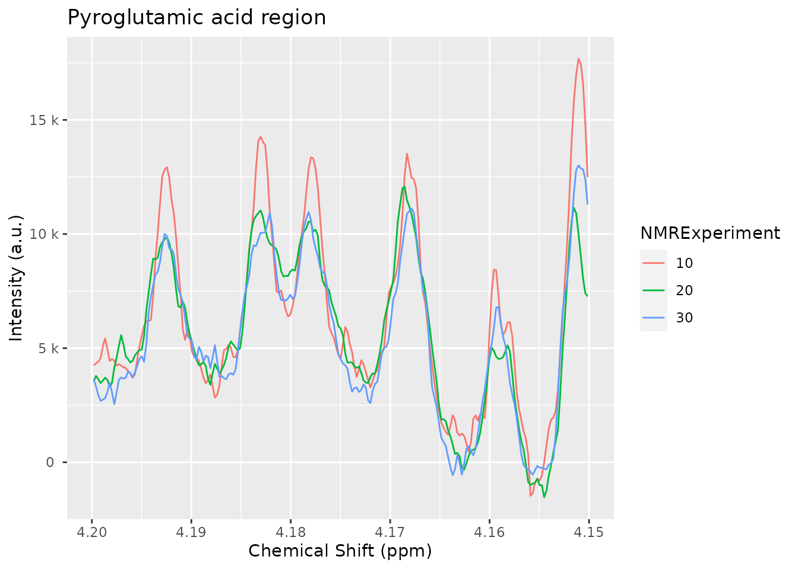
We define the peak regions and integrate them. Note how we can correct the baseline or not. If we correct the baseline, the limits of the integration will be connected with a straight line and that line will be used as the baseline, that will be subtracted.
pyroglutamic_acid <- list(pyroglutamic_acid1 = c(4.19, 4.195),
pyroglutamic_acid2 = c(4.18, 4.186),
pyroglutamic_acid3 = c(4.175, 4.18),
pyroglutamic_acid4 = c(4.165, 4.172))
regions_basel_corr_ds <- nmr_integrate_regions(dataset_norm, pyroglutamic_acid, fix_baseline = TRUE)
regions_basel_corr_matrix <- nmr_data(regions_basel_corr_ds)
regions_basel_corr_matrix
#> pyroglutamic_acid1 pyroglutamic_acid2 pyroglutamic_acid3 pyroglutamic_acid4
#> 10 15.61810 20.36002 16.018972 32.99148
#> 20 12.89344 10.63232 7.196728 30.74094
#> 30 12.65231 14.56388 11.226573 31.03655
regions_basel_not_corr_ds <- nmr_integrate_regions(dataset_norm, pyroglutamic_acid, fix_baseline = FALSE)
regions_basel_not_corr_matrix <- nmr_data(regions_basel_not_corr_ds)
regions_basel_not_corr_matrix
#> pyroglutamic_acid1 pyroglutamic_acid2 pyroglutamic_acid3 pyroglutamic_acid4
#> 10 43.51763 53.53241 43.93533 52.67311
#> 20 39.61702 51.07377 42.00336 53.07528
#> 30 38.10972 47.99196 39.99623 46.40013We may plot the integral values to explore variation based on the baseline subtraction.
dplyr::bind_rows(
regions_basel_corr_matrix %>%
as.data.frame() %>%
tibble::rownames_to_column("NMRExperiment") %>%
tidyr::gather("metabolite_peak", "area", -NMRExperiment) %>%
dplyr::mutate(BaselineCorrected = TRUE),
regions_basel_not_corr_matrix %>%
as.data.frame() %>%
tibble::rownames_to_column("NMRExperiment") %>%
tidyr::gather("metabolite_peak", "area", -NMRExperiment) %>%
dplyr::mutate(BaselineCorrected = FALSE)
) %>% ggplot() + geom_point(aes(x = NMRExperiment, y = area, color = metabolite_peak)) +
facet_wrap(~BaselineCorrected)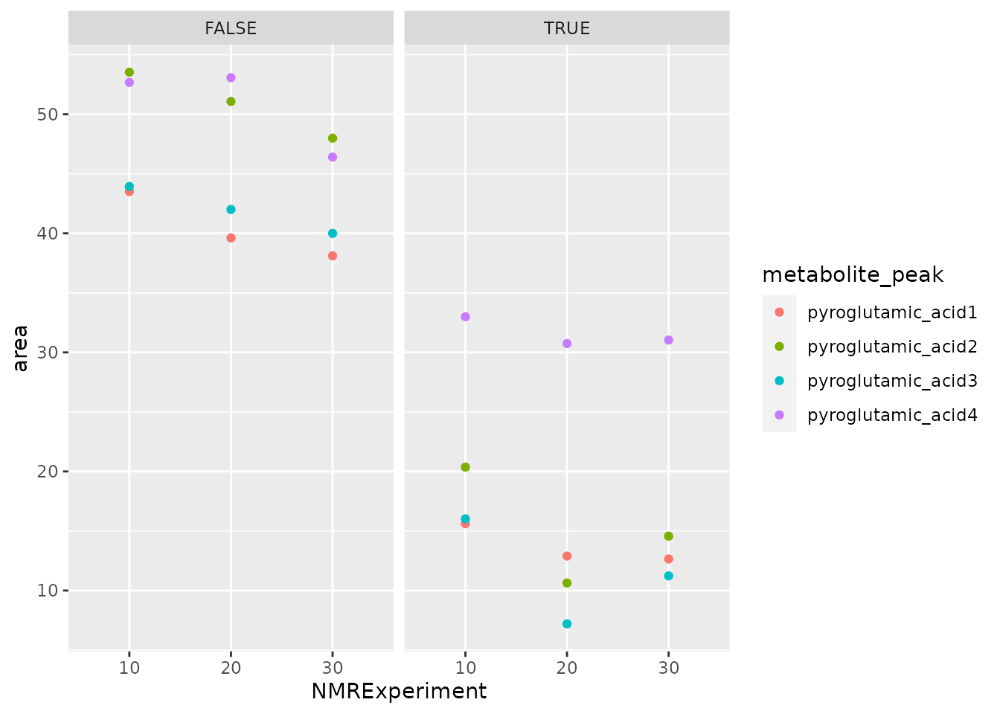
After applying any feature selection or machine learning, Alps allows
the identification of features of interest through
nmr_identify_regions_blood. The function gives 3
posibilities sorted by the most probable metabolite (see
nmr_identify_regions_blood for details).
ppm_to_assign <- c(4.060960203, 3.048970634,2.405935596,0.990616851,0.986520147, 1.044258467)
identification <- nmr_identify_regions_blood (ppm_to_assign)
identification[!is.na(identification$Metabolite), ]
#> Metabolite HMDB_code Shift_ppm Type J_Hz Height
#> 1781 L-Valine HMDB00883 0.991 d 7.01 1.0000
#> 1031 L-Alpha-aminobutyric acid HMDB00452 0.997 t 7.58 1.0000
#> 178 L-Valine HMDB00883 0.991 d 7.01 1.0000
#> 103 L-Alpha-aminobutyric acid HMDB00452 0.997 t 7.58 1.0000
#> 179 L-Valine HMDB00883 1.044 d 7.05 0.9614
#> 195 Pyroglutamic acid HMDB00267 2.405 m 0.7466
#> 201 Succinic acid HMDB00254 2.405 s 1.0000
#> 148 L-Lysine HMDB00182 3.035 t 1.0000
#> 47 Creatinine HMDB00562 3.045 s 1.0000
#> 44 Creatine HMDB00064 3.035 s 1.0000
#> 46 Creatinine HMDB00562 4.065 s 0.4374
#> 182 Myoinositol HMDB00211 4.068 t 2.839 NA
#> 40 Choline HMDB00097 4.071 ddd 0.0607
#> Blood_concentration n_reported_in_Blood ppm_to_assign
#> 1781 179.04615 13 0.9865201
#> 1031 22.80000 6 0.9865201
#> 178 179.04615 13 0.9906169
#> 103 22.80000 6 0.9906169
#> 179 179.04615 13 1.0442585
#> 195 19.50000 2 2.4059356
#> 201 16.10000 8 2.4059356
#> 148 168.20000 14 3.0489706
#> 47 51.25167 14 3.0489706
#> 44 48.47000 6 3.0489706
#> 46 51.25167 14 4.0609602
#> 182 23.52500 5 4.0609602
#> 40 13.08000 5 4.0609602This vignette shows many of the features of the package, some features have room for improvement, others are not fully described, and the reader will need to browse the documentation. Hopefully it is a good starting point for using the package.
sessionInfo()
#> R version 4.2.1 (2022-06-23)
#> Platform: x86_64-pc-linux-gnu (64-bit)
#> Running under: Ubuntu 20.04.4 LTS
#>
#> Matrix products: default
#> BLAS: /usr/lib/x86_64-linux-gnu/openblas-pthread/libblas.so.3
#> LAPACK: /usr/lib/x86_64-linux-gnu/openblas-pthread/liblapack.so.3
#>
#> locale:
#> [1] LC_CTYPE=en_US.UTF-8 LC_NUMERIC=C
#> [3] LC_TIME=en_US.UTF-8 LC_COLLATE=en_US.UTF-8
#> [5] LC_MONETARY=en_US.UTF-8 LC_MESSAGES=en_US.UTF-8
#> [7] LC_PAPER=en_US.UTF-8 LC_NAME=C
#> [9] LC_ADDRESS=C LC_TELEPHONE=C
#> [11] LC_MEASUREMENT=en_US.UTF-8 LC_IDENTIFICATION=C
#>
#> attached base packages:
#> [1] stats graphics grDevices utils datasets methods base
#>
#> other attached packages:
#> [1] ggplot2_3.3.6 AlpsNMR_3.99.2 future_1.28.0
#> [4] BiocParallel_1.30.4 BiocStyle_2.24.0
#>
#> loaded via a namespace (and not attached):
#> [1] matrixStats_0.62.0 fs_1.5.2 httr_1.4.4
#> [4] RColorBrewer_1.1-3 rprojroot_2.0.3 doRNG_1.8.2
#> [7] tools_4.2.1 bslib_0.4.0 utf8_1.2.2
#> [10] R6_2.5.1 colorspace_2.0-3 withr_2.5.0
#> [13] tidyselect_1.2.0 gridExtra_2.3 MassSpecWavelet_1.62.0
#> [16] compiler_4.2.1 progressr_0.11.0 rvest_1.0.3
#> [19] textshaping_0.3.6 cli_3.4.1 SparseM_1.81
#> [22] xml2_1.3.3 desc_1.4.2 labeling_0.4.2
#> [25] bookdown_0.29 sass_0.4.2 scales_1.2.1
#> [28] mvtnorm_1.1-3 randomForest_4.7-1.1 quadprog_1.5-8
#> [31] pkgdown_2.0.6 systemfonts_1.0.4 stringr_1.4.1
#> [34] digest_0.6.29 rmarkdown_2.17 pkgconfig_2.0.3
#> [37] htmltools_0.5.3 parallelly_1.32.1 itertools_0.1-3
#> [40] fastmap_1.1.0 highr_0.9 rlang_1.0.6
#> [43] readxl_1.4.1 impute_1.70.0 jquerylib_0.1.4
#> [46] generics_0.1.3 farver_2.1.1 jsonlite_1.8.2
#> [49] speaq_2.7.0 dplyr_1.0.10 magrittr_2.0.3
#> [52] Matrix_1.5-1 Rcpp_1.0.9 munsell_0.5.0
#> [55] fansi_1.0.3 RcppZiggurat_0.1.6 lifecycle_1.0.3
#> [58] stringi_1.7.8 yaml_2.3.5 MASS_7.3-58.1
#> [61] plyr_1.8.7 grid_4.2.1 parallel_4.2.1
#> [64] listenv_0.8.0 ggrepel_0.9.1 doSNOW_1.0.20
#> [67] crayon_1.5.2 lattice_0.20-45 knitr_1.40
#> [70] pillar_1.8.1 igraph_1.3.5 rngtools_1.5.2
#> [73] corpcor_1.6.10 reshape2_1.4.4 codetools_0.2-18
#> [76] mixOmics_6.20.0 lpSolve_5.6.17 glue_1.6.2
#> [79] evaluate_0.17 data.table_1.14.2 BiocManager_1.30.18
#> [82] missForest_1.5 foreach_1.5.2 vctrs_0.4.2
#> [85] cellranger_1.1.0 gtable_0.3.1 purrr_0.3.5
#> [88] tidyr_1.2.1 cachem_1.0.6 xfun_0.33
#> [91] limSolve_1.5.6 Rfast_2.0.6 RSpectra_0.16-1
#> [94] baseline_1.3-4 ragg_1.2.3 pcaPP_2.0-2
#> [97] rARPACK_0.11-0 signal_0.7-7 tibble_3.1.8
#> [100] snow_0.4-4 iterators_1.0.14 memoise_2.0.1
#> [103] ellipse_0.4.3 cluster_2.1.4 globals_0.16.1
#> [106] ellipsis_0.3.2e.g. it can inadvertedly distort the PQN normalization results↩︎